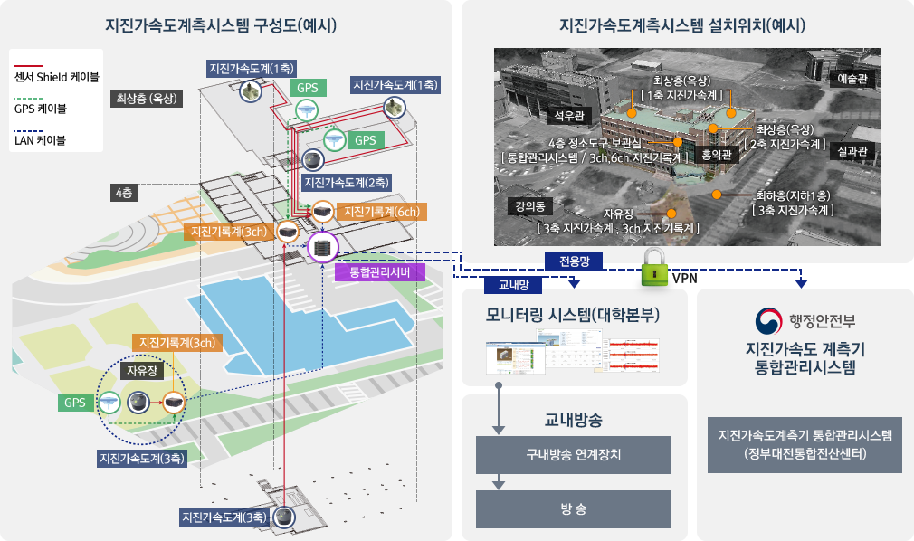
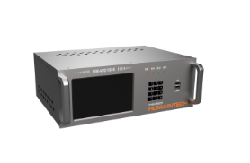
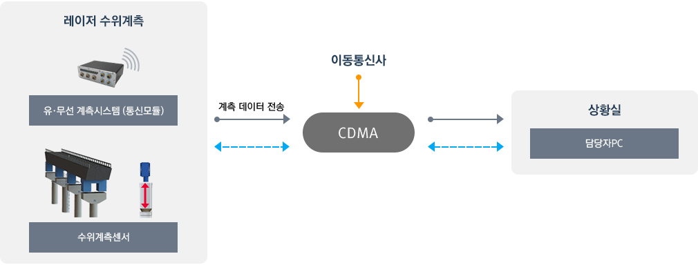
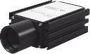
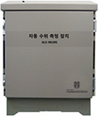

재난계측
- 강우량계측시스템
- 지진가속도계측시스템
- 레이저수위측정시스템
-
주요기능
- 계측소의 기록계 및 센서에 대한 상세 정보 및 관리 기능 제공
- 지진가속도계측자료 통합관리시스템 메인화면으로 자체 관리 시설에 대한 계측정보 표출
- 지진가속도계측 데이터를 행정안전부 통합관리시스템으로 전송
-
시스템 구성

-
장비 주요 규격
강우량계 HM-WD1000

강우량계 데이터로거 내부 메모리에 데이터 저장
이더넷을 통해 빠르고 안정적인 데이터 전송
USB드라이브를 이용한 강우량 데이터 백업 기능
전면 LED를 통해 장치 상태 및 연결 상태 확인
한눈에 일/월/년 강우량 데이터를 확인할 수 있는 GUI
터치스크린 지원으로 인한 쉽고 편리한 조작
세부항목 규 격 CPU ARM Cortex-A53
CPU 1.2GHz 이상RAM LPDDR2 1GB 이상 Flash Memory eMMC 8GB 이상 LAN 통신 Ethernet 10/100M 시리얼 통신 RS232 / RS485 디스플레이 전면 7인치 TFT LCD 전면부 조작 및 표시부 상태 확인 LED, 키패드 지원 전원부 AC220V / DC +24V(SMPS) 데이터 처리 메인 화면 및 상세 조회를 통한 데이터 조회
통신 인터페이스를 이용한 다양한 방식의 데이터 전송
USB 드라이브 이용한 데이터 백업크기 367(W) X 261(H) X 130(D) 동작 온도 - 20℃ ~ 80℃
-
주요기능
- 레이저수위측정센서를 통해 실시간 수위 현황 모니터링 가능
- 레이저수위측정시스템이 설치된 지역의 일, 월, 년별 측정데이터를 통합관리 및 통계적 분석 데이터 제공
- 수위 측정 상태가 일정 상태 이상 측정시 자동 보고 및 알림을 통해 비상시 빠른 대응이 가능
-
시스템 구성

-
장비 주요 규격
레이저측정기

구분 세부 규격 측정거리 0.1 ~ 30m 정밀도 +/- 1mm 레이저 빔직경 35mm 이하 레이저 안전 Class 2 레이저 발산각 0.6mrad 이하 동작온도 -10도 ~ +50도 보호등급 IP65 데이터 분석장치

구분 세부 규격 CPU ARM 9, 400MHz Memory SDRAM:128MB, Flash:256MB
외장 USB : 32GBOS Embedded Linux 저장 외장 메모리 지원(데이터 저장용)
데이터 저장기간 : 1년 이상통신 RS-232, WCDMA, Ethernet 지원 기능 데이터 검출 및 분석 (평균, 이동평균, Min/Max/Average) 해발고도 설정 가능